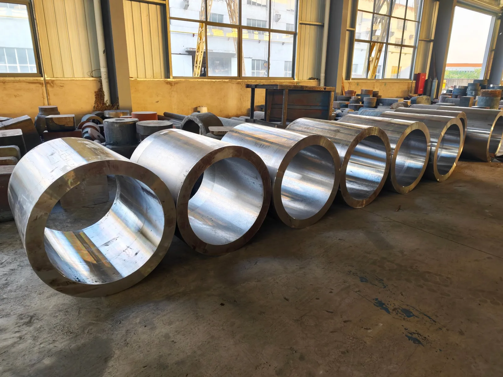
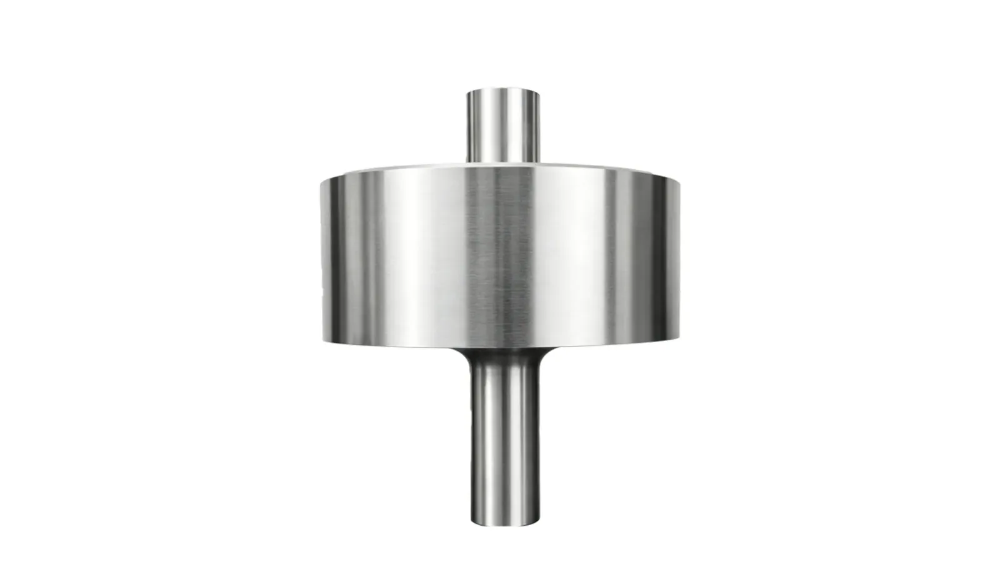
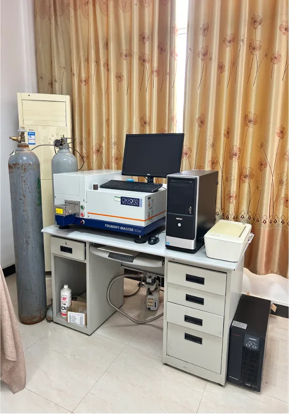

大口径液压油缸筒体锻件供应：锻造成型 → 调质热处理 → 探伤检测 → 交检发货，组织致密、壁厚均匀、内部质量可靠，为液压缸的精加工提供优质坯料基础。
缸筒是液压油缸的承压骨架，其内部质量直接决定油缸的承压能力与寿命。我们以锻造成形替代普通管材切割，金属流线连续、组织致密，避免缩松与夹杂隐患；经调质热处理使筒体强度与韧性兼顾，配合UT 探伤验证内部质量，检测报告随货，每批可追溯。
| 产品范围 | 液压油缸筒体 · 缸筒 · 缸体锻件 · 大口径厚壁筒体 |
|---|---|
| 常用材质 | 27SiMn / 35CrMo / 42CrMo / 45# / 35Mn / E355 等，按图纸与工况选材 |
| 供货形态 | 锻造毛坯 / 粗加工态 / 调质热处理态（按图约定） |
| 质量控制 | 化学成分 · 力学性能 · UT 探伤 · 硬度检测 |
| 标准依据 | GB/T 8713 缸筒用精密内径无缝钢管 · GB/T 228.1 力学性能 · GB/T 6402 超声检测 |



覆盖工程机械、煤矿支护、塑机压铸、船舶港口等主流液压场景
挖掘机、装载机、起重机等动臂、斗杆、伸缩油缸配套缸筒。
煤矿综采液压支架立柱、千斤顶缸筒，承压要求高、批量大。
合模、注射、压射油缸缸筒，对内壁光洁与尺寸稳定性要求高。
舵机、舱口盖、港口机械及矿山设备各类大口径液压缸筒。
从材料到成品，每个环节都有检测背书
锻造成形替代普通管材切割，内部无缩松、夹杂隐患，承压更可靠。
调质热处理让筒体兼顾强度与韧性，适应高频率、高压力工况。
锻造工艺保证筒体壁厚均匀、同轴度好，为后续精加工留出稳定余量。
化学成分、力学性能、UT 探伤报告随货，每批可追溯、可验证。